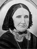
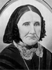

Napoleon Bonapart and Louisa Jane Higgins Roundy Family
Home
Histories
Charts
Photos
Maps
Restricted
News
Info
Contact
| <--(return)-- |    | Shadrach Roundy and Betsy Quimby | ----> |   | Lorenzo Wesley and Susannah Wallace  ----> ----> |
 
| Napoleon Bonapart Roundy and Louisa Jane Higgins He also married Elizabeth Margaret Williams
|
 | Alice Sarah Roundy 7 Apr. 1881 - 19 May 1916 Married Hyrum Porter 23 Oct. 1901 The 1st child of Napoleon Bonapart Roundy and Louisa Jane Higgins |
| Hannah Diantha Roundy 28 Sep. 1883 - 5 Nov. 1906 Married Frank Barney 1901 The 2nd child of Napoleon Bonapart Roundy and Louisa Jane Higgins |
| Rebecca Roundy 8 Apr. 1886 - 18 Jan. 1967 Married Joseph A. Griffin 1904 The 3rd child of Napoleon Bonapart Roundy and Louisa Jane Higgins |
| Hyrum Shadrach Roundy 20 June 1888 - 15 May 1960 Married Jane Lay 5 Jan. 1908 The 4th child of Napoleon Bonapart Roundy and Louisa Jane Higgins |
Back to Buchanan Family History web pages.